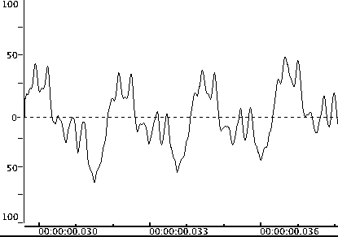
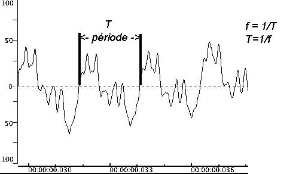
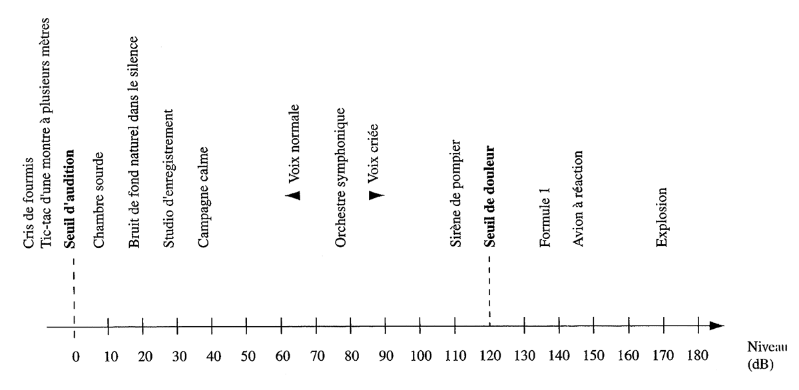
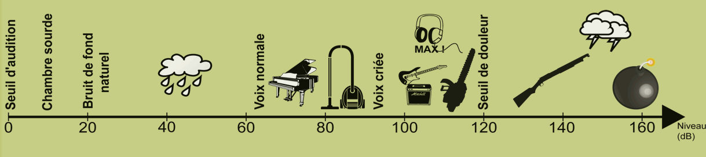
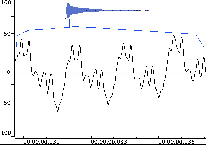
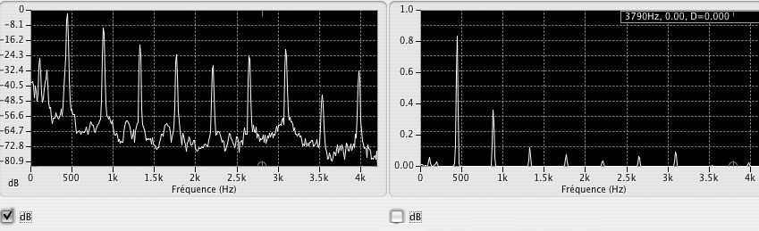

Théorie du son
Propagation du son
La notion d'onde peut être définie comme une perturbation oscillatoire qui se propage à partir d'une source.
C'est Robert Boyle (1627-1691) qui a admis le premier que l'air était un milieu de transmission du son, en observant les diminutions d'intensité d'un son émis dans une atmosphère progressivement raréfiée.
La vitesse de propagation du son dans l'air est de 331 m/s (à une température de 0°C et à une pression de 760 mm de mercure).
| Milieu de propagation | Température | Vitesse du son |
| air | 0°C | 331 m/s |
| air | 15°C | 340 m/s |
| eau | 13°C | 1428 m/s |
| fer | 20°C | 4887 m/s |
| bois de sapin | non spécifié | 6000 m/s |
La vitesse du son augmente avec la température pour atteindre 340 m/s à 20°C dans l'air (c'est généralement la valeur de référence utilisée quand on parle de vitesse du son dans l'air).
Réception du son
Jusqu'à la fin du XIXe siècle, la plupart des recherches en acoustique étaient effectuées en utilisant l'oreille comme récepteur du son. En 1830, Félix Savart donna comme limites de l'audition humaine les valeurs de 8 vibrations par seconde vers le grave et de 24000 vibrations par seconde vers l'aigu. Actuellement on les situe respectivement à 20 Hz et 20000 Hz.

Le seuil d'audibilité en intensité fut étudié par Toepler, Botzmann et J. William Strutt Rayleigh :

En 1843, Georg S. Ohm indiqua que la qualité d'un son musical est due à la superposition de sons purs de différentes fréquences que l'oreille est capable de percevoir. Hermann von Helmholtz le suivit dans cette voie et donna la première théorie du fonctionnement de l'oreille, appelée « théorie de la résonance ».
Les premières considérations concernant l'acoustique des salles intervinrent en 1853 lors de la parution des articles de J. B. Upham définissant les phénomènes de réverbération et de réflexion du son à la surface des parois d'une pièce. En 1856, Joseph Henry se mit à étudier l'acoustique des auditoriums. La fondation de l'acoustique architecturale est attribuée à C. Sabine en 1900.
Parmi les tentatives d'amplification du son, on peut citer l'utilisation des trompes qui sont connues depuis l'antiquité . En 1650, Kircher proposa l'utilisation de trompes paraboliques pour l'aide à l'audition. René Laënnec inventa en 1819 le stéthoscope. Le terme « microphone » fut inventé par Charles Wheastone en 1827 pour désigner un instrument similaire au stéthoscope.
Comme pour la plupart des phénomènes étudiés en physique, les chercheurs en acoustique ont tenté de mettre au point des techniques permettant de donner une représentation visuelle des phénomènes. En 1858, John LeConte observa les variations d'une flamme sous l'influence du son. John Tyndall développa le même principe pour l'observation des sons à hautes fréquences et de leur réflexion, réfraction et diffraction. Le microphone électrique supplanta ce système. Divers dispositifs furent employés pour la visualisation des phénomènes sonores dont le « phonautographe » mis au point par Leon Scott. Cet instrument, précurseur du phonographe, permettait de tracer une courbe décrivant l'onde sonore à l'aide d'un stylet.
La possibilité offerte par l’enregistrement du son a révolutionné les sciences du son avec l’apparition du phonographe d’Edison en 1875. Le son peut ainsi être fixé sur un support, il n’est plus un phénomène acoustique fugitif, il est reproductible à loisir. L’année suivante, c’est Bell qui invente le son électrique avec le téléphone en 1876 qui conduira au traitement du signal sonore et aux transmissions à distance.
L'électronique a apporté de nouveaux instruments de mesure. Pour connaître les partiels présents dans un son, on peut capter ce son à l'aide d'un microphone puis analyser le signal électrique ainsi produit grâce à des filtres électroniques. L'analyseur de spectre est un appareil utilisant un ensemble de filtres. Il permet de visualiser sur un écran la courbe donnant les intensités d'un ensemble de fréquences. Cette courbe est appelée spectre de raies.
Classification des sons
Il existe différentes classifications des sons. Nous nous limiterons à la suivante, on peut classer les sons en deux catégories : les sons élémentaires et les sons complexes.
Sons élémentaires
L'impulsion
L'impulsion est un son de durée infiniment courte (clic ou impulsion ou dirac) comme un clap de cinéma ou un coup de révolver ou, en numérique, la succession 0, 1, 0 ou 0, 1, -1, 0. Certains acousticiens prétendent que ce son contient toutes les fréquences mais nous dirons plus simplement qu'il n'en contient aucune.
Le programme Faust suivant produit une impulsion une fois par seconde (à une période p correspondant au taux d'échantillonnage ma.SR) :
Le mouvement harmonique simple
Le mouvement harmonique simple (aussi appelé "son pur") correspond à une onde sinusoïdale de fréquence fixe. Le son produit par un diapason est proche d'un mouvement harmonique simple.
Le programme Faust suivant produit une sinusoïde à 440 Hz ce qui correspond un à LA3 :
Sons complexes
Les sons complexes correspondent à tous les autres sons. Ce sont donc des sons formés de la juxtaposition de plusieurs vibrations élémentaires (les sons partiels). Nous pouvons distinguer trois catégories: les sons harmoniques, les sons inharmoniques et les bruits.
Les sons harmoniques
Ce sont des sons dont les partiels sont tous multiples d’une même fréquence fondamentale. Ce sont des sons à hauteur déterminée. Ils résultent d’une onde périodique.
Des partiels dont les fréquences sont en rapports harmoniques fournissent un ensemble particulier d'intervalles par rapport à notre perception musicale

Le programme Faust suivant implémente une suite harmonique constituée de sinusoïdes dont les fréquences sont toutes des multiples de la fondamentale :

Les sons inharmoniques
Ce sont des sons dont les partiels (identifiables à l'analyse) ne sont pas multiples (par ex. les sons de cloches).
Le programme Faust suivant produit un son inharmonique en ajoutant plusieurs sinusoïdes entre-elles dont les fréquences ne sont pas des multiples de la fondamentale :
Les bruits
Ce sont les sons dont le nombre de partiels est trop important pour qu'on puisse les identifier à l'analyse (ex. une cymbale, une caisse claire avec timbre) ou qui varient trop vite dans le temps.
Le programme Faust suivant produit du bruit blanc (un bruit dont la quantité d'énergie est la même sur l'ensemble du spectre) :
Certains bruits ont un spectre non neutre, c'est le cas par exemple du « bruit rose » qui a un spectre plus « coloré » que celui du bruit blanc :
Les paramètres du son
La forme d'onde
On peut l'observer avec une représentation "Pression/temps" à l'échelle de la milliseconde environ, qui permet d'observer les variations de l'amplitude du son au cours du temps.

La hauteur
L'observation de la forme d'onde permet de repérer la période du son (pour les sons harmoniques).
La périodicité de la vibration
La période T exprimée en seconde est l'inverse de la fréquence de la vibration : f = 1/T
La longueur d'onde (en mètres) lambda = c x T = c / f (c étant la célérité ou vitesse du son = 340 m/s)

La hauteur perçue
Pour un son pur, la hauteur est liée à la fréquence de la vibration (ex : La3 : 440 Hz, f/mc).
Pour un son harmonique, la hauteur est liée aux rapports de fréquences entre les partiels et non à la fréquence la plus basse. La fondamentale peut être absente sans qu'on perde la notion de hauteur.
Le programme Faust suivant permet d'activer ou non la fondamentale d'un son harmonique :
Grave ou aigu
Indépendamment de la hauteur du son, le timbre peut être grave ou aigu. Cette notion est liée à la répartition de l'énergie dans le spectre (vers les aigus ou vers les graves).
L'amplitude
On dispose de plusieurs grandeurs : la pression sonore (N/m2), l'intensité (l'énergie, proportionnelle au carré de la pression, en W/m2) et la puissance acoustique (Watt).
L'oreille peut détecter des sons correspondant à des variations de la pression de l'air inférieures à un milliardième de fois la pression atmosphérique. Elle peut supporter jusqu'à un millième de fois la pression atmosphérique (soit un million de fois plus). Les écarts de pressions entre un son fort et un son faible sont donc énormes et cette échelle ne correspond pas à la perception que l'on a du volume sonore (ou niveau sonore). Des tests d'écoute montrent que la sensation subjective de niveau sonore Lp (Loudness) est reliée au logarithme de la pression P (ou de l'intensité).
Lp = 20.log 10 ( P/P 0 ) (avec P : pression efficace et P 0 : pression de référence à 0dB).
La pression efficace (root-mean square) est égale à la racine carrée de la valeur moyenne du carré de la pression.
Le niveau de pression sonore (SPL : Sound Pressure Level) est donc exprimé en décibel (dB), une échelle logarithmique :
| Pression (N/m2) | 0.00002 | 0.0002 | 0.002 | 0.02 | 0.2 | 2 | 20 |
| Niveau (dB) | 0 | 20 | 40 | 60 | 80 | 100 | 120 |


Lorsque la pression sonore est multipliée par 2, la sensation augmente d'une valeur constante : le niveau gagne +6dB.
Lorsque deux sources d'égale puissance jouent ensemble, la pression n'est pas multipliée par 2. Le niveau gagne seulement +3dB. Pour doubler la pression et avoir un niveau de +6dB, il faut quatre sources (quatre violons jouent deux fois plus fort qu'un seul violon). Toutefois pour avoir une sensation de volume sonore deux fois plus fort, il faut augmenter le niveau de +10dB.
Enfin, la sensation de volume sonore (loudness en anglais) dépend également de la fréquence du son. Cette sensation est beaucoup moins importante, à pression égale, pour des sons graves (< 200 Hz) que pour des sons entre 300 et 7000 Hz (zone correspondant à la parole) : voir la section "Réception du son"
Quand on s'éloigne de la source sonore, si on double la distance, le niveau sonore perd 6dB.
L'enveloppe d'amplitude
Elle indique les variation de l'amplitude du son en fonction du temps. Elle comporte souvent plusieurs phases : l'attaque, une première décroissance (decay), le maintien (sustain), qui correspond à l'entretien du son, et la chute (release), lorsque le son n'est plus entretenu.

Le programme Faust suivant implémente un synthétiseur basé sur une onde en dent de scie contrôle par une envelope ADSR :
Les transitoires
Ils correspondent à des états non stationnaires d'un son (par exemple l'attaque d'un son). Ils jouent un rôle très important dans la reconnaissance des instruments.
Le spectre
C'est un graphique qui représente la répartition de l'énergie du son selon les fréquences. Il est obtenu après l'analyse (FFT) d'un son à un instant donné, sur une certaine durée (fenêtre). Il permet de mettre en évidence les partiels du son.
Étude d'un son de guitare
Son de guitare, note La3 :
Enveloppe d'amplitude du son

L'onde sonore

Le spectre

Le spectre peut être représenté en dB (à gauche) ou en amplitude linéaire à droite. En amplitude linéaire, le graphe met en évidence les partiels les plus intenses seulement. Le graphe en dB est plus proche de la perception.
Le spectre de la guitare (réalisé juste après l'attaque) montre un série de partiels équidistants, tous multiples de 440Hz (la fondamentale). Quelques partiels non harmoniques sont également présents (en dessous de 300 Hz notamment) qui sont des partiels transitoires (disparaissent très vite).
Le sonagramme

Les échelles musicales
Le tempérament égal
Dans la gamme à tempérament égal, le rapport de fréquence Fn / Fn-1 entre la fréquence Fn d'une note et la fréquence d'une note située un demi-ton au dessous Fn-1 est constant, quelle que soit la note considérée.
Sachant que le rapport Fn / Fn-12 entre la fréquence d'une note Fn et la fréquence d'une note située à l'octace en dessous (12 demi-tons plus bas) Fn-12 est égal à 2: on en déduit que le rapport de Fn / Fn-1 = 2 puissance 1/12 = 1.05946.
=> si La3 vaut 440 Hz, le La#3 vaut 440 x 1,05946 = 466,16 Hz.
=> sachant qu'en MIDI, la note 69 est le La3 dont la fréquence vaut 440 Hz.
Les autres tempéraments
La musique est souvent construite à partir de sons ayant des hauteurs précises. Ces hauteurs sont souvent définies à partir des proportions liées à la succession des harmoniques à partir d'une note fondamentale ou tonique.
| rapport de fréquence | 1 | 9/8 | 5/4 | 4/3 | 3/2 | 5/3 | 15/8 | 2 |
| intervalle | unisson | 2nde maj | 3ce maj | 4te juste | 5te juste | 6te maj | 7e maj | octave |
| note | La2 | Si2 | Do#3 | Ré3 | Mi3 | Fa#3 | Sol#3 | La3 |
| fréquence juste | 220 | 247,5 | 275 | 293,33 | 330 | 366,67 | 412,5 | 440 |
| tempérament égal | 220 | 246,94 | 277,18 | 293,66 | 329,63 | 369,99 | 415,3 | 440 |
| écart (en 1/2 ton) | 0,00 | 4% | 14% | 2% | 2% | 16% | 12% | 0,00 |
| f. pythagoricienne | 220 | 247,5 | 278,44 | 297,34 | 330 | 371,25 | 417,66 | 446 |
| f. pythog. corrigée | 220 | 247,5 | 278,44 | 297,34 | 330 | 371,25 | 417,66 | 440 |
La gamme pythagoricienne
Elle est construite en utilisant le cycle des quintes :
do - sol - ré - la - mi - si - fa# - do# - sol# - ré# - la# - mi# (fa) - si# (do)
On appelle gamme pythagoricienne toute gamme musicale fondée uniquement sur des intervalles d'octaves et de quintes acoustiquement pures. Un telle gamme contient aussi des quartes pures, renversements des quintes.
La douzième quinte dépassant légèrement l'octave (d'un comma), elle va être réduite pour former l'octave juste. Cette quinte plus petite est inutilisable en musique car elle sonne faux. On dit qu'elle hurle, et se nomme « quinte du loup ». Dans la pratique, les musiciens qui utilisent une gamme pythagoricienne placent la quinte du loup dans un intervalle peu utilisé, comme par exemple sol# - mi#.
La gamme de Zarlino
Avec le tempérament Zarlino, les principaux intervalles dans un mode donné (par exemple en do) correspondent à des rapports de fréquences qui correspondent à des fractions simples : do- ré = 9/8 (deux quintes pures transposées d’une octave : 3/2 × 3/2 ÷ 2), do-mib = 6/5 do-mi = 5/4, do - fa = 4/3, do = sol = 3/2, do - la = 5/3 (une tierce majeure + une quarte : 5/4 x 4/3 = 5/3), do-si = 15/8 (une tierce majeure + une quinte: 5/4 x 3/2 = 15/8).

La gamme de Werckmeister III
Dans ce tempérament, le comma pythagoricien est réparti par quarts sur 4 quintes (qui deviennent ainsi un peu courtes) : do-sol, sol-ré, ré-la et si-solb.
Ainsi les tierces do-mi et fa-la sont assez proches d’intervalles justes, les autres s'en éloignant progressivement. Ce tempérament, par le choix de la quinte tempérée si-solb favorise les tonalités en bémol.